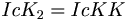
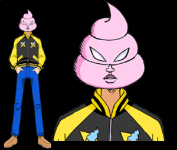

Caca
 De: La Frikipedia, la enciclopedia extremadamente seria.
De: La Frikipedia, la enciclopedia extremadamente seria.
| De la serie Elementos químicos:
|
|
|
| Nombre oficial:
|
Caca
|
| Otros nombres:
|
Mierda, truño, ñordo, hez, RBD, reggaeton, zurraspa, Justin Bieber, Nomejodas Brothers, Crepúsculo, Tokio Hotel, Políticos mexicanos, Politicos peruanos, GuVa, mojón, flaite...
|
| Serie alquímica:
|
Salinomarinos
|
| Descubridor:
|
Lucy el homínido
|
| Color en tabla:
|
#C0A000 ó #CACA00 ó #FECA00
|
| Presente en:
|
Las aceras de la ciudad, plantas de tratamiento, inodoros, hamburguesas de McDonalds, los el churrero de la esqiuna cuando se le acaba la cajeta, cabinas telefónicas y núcleos de ordenadores Hasecorp, la cabeza de Daddy Yankee, la camara de diputados, la camara de senadores...
|
| Usos:
|
Advertir de las cosas malas y da suerte si la pisas, en caso de necesidad extrema "alimento" (véase 2girls1cup)
|
| Estado:
|
depende de la exposición solar
|
| Peso kg/puñao:
|
poco (depende que comiste)
|
| Estructura:
|
Curva cónica helicoidal ascendente (Cono), también con forma alargada y en bolas, en raros casos puede ser liquida
|
| Abstracción:
|
no puedes
|
| Humungoso:
|
siempre
|
Se conoce como caca a la materia resultante de la digestión en los seres vivos por su bajo nivel nutricional. El término "caca" posee un sin fin de sinónimos, el cual varia según el país, consistencia y color.
La Historia de la caca
Desde que existen los seres vivos, estos por medios que ya sabemos han necesitado evacuar toda la porqueria que se meten por el hocico. Pero la mayoría de la gente desconoce a donde ha ido toda esa mierda. La verdad es que la mierda es un ser que no razona pero al fin y al cabo un ser vivo. "Las Cacas Vivientes" es una de las películas más famosas sobre la historia de la caca. En fin... Se han de preguntar a donde va la caca, a continuación se los describire.
La caca desde esas épocas que anteriormente describía, iba directo hacia los ríos, por si no lo saben las cacas cuando no son vistas sacan unas patitas que les ayudan a ir directo a una corriente de agua. Estas cacas buscan agua para poder vivir, ya que si estan mucho tiempo al aire, las cacas automaticamente mueren. Las queridas caquitas crearon una ciudad llamada Cacopolis, donde un héroe llamado Cacman salvo a las demás caquitas de "tocar aire", así de dicen a su muerte. Y esta raza de cacas han estado planeando atacar el mundo humano, para apoderarse de nosotros. ¿Por qué? Simplemente porque nosotros que hacemos estos hijitos tan hermosos los vamos a tirar por el escusado, les parece tan monstruoso que quieran venir a matarnos. Existe un rey, el Rey Caca IV, así como la Reina Porquería III, estos han tratado de ser pacifistas, pero el pueblo Fecal, definitivamente quiere venir a matarnos. No tenemos datos mas recientes pero las cacas tienden a la inmortalidad al parecer, no hemos encontrado otra forma de acabar con ellas, solo cuando las cagamos podemos eliminarlas sin llevarlas a la corriente. Asi que tomen las precauciones y caguen en la calle directamente y en público. No dejen que las cacas lleguen a una corriente de agua. Salvemos al mundo, caguemos donde sea.
Me voy a echar una Inciclopedia y vuelvo
La variación de la ecuación binomial de la caca en cuestión
« »
»
~ Einstein con su descubrimiento que más tarde le ganaría el Nobel de Física
« »
~ Newton con su descubrimiento
« »
~ Fórmula explicativa donde Ic es un verbo y KK es un desecho corporal
Nota: la formula viene de la derivacion de la verdadera formula que es" P2+K2YA+A2=KK"
Término pluriforme del castellano destinado a describir personas, situaciones, realidades y otras circunstancias definidas por el enclave cuántico de la materia en el continuo espacio-tiempo.
Otra archiconocida formula es la deducida de:
De donde se deduce que:
En cambio si PP en lugar de ser un cadete tuviera 18años podriamos decir que es un quinto, y por tanto si PP=1/5, seria valido decir:

Caca en la Informática
La acepción general de la definición primigenia podría expresarse como "La sustancia holomorfa excretada por el orificio anal de algunos animales", y aunque durante muchos eones fué así, la riqueza adquirida por la palabra "caca" en su vertiente semántica, nos permite usarla para expresar casi cualquier idea que se nos pase por la cabeza.
Como ejemplo de esta expansión terminológica tenemos las palabras derivadas: "residuos fecalus", "Chavez", "Regueton", "moñigo", "boñiga","Runescape", "plasta", "quijote","Guitar Hero", "popó", "Mägo de Oz", "sorete", "Porta", "zurullo", "mojón", "majá", "tronco", "cagate", "zocote", "mierda", "mela", "jiño", "sorpresa", "kakarotto", "cagallón", "puro", "descomida", "pasajero", "excremento", "Rapidshare", "Totti", pino", "misterio", "hez", "cagada", "caguín", "churreta", "puré", "churrasca", "chorongo", "chocotrozo", "cagarro", "morterá", "sorongo", "rosano", "tereso", "yukaso", "birria", "socotroco", "Wikipedia" "bodrio", "reggaetón", "código de seguridad", "cerote", "submarino", "milagro","chorizo", "noob", "Life", "Excreción maloliente del orto(EmO), "cacúmen", "cacunio", "etc".

Dicen que esta caca inhóspita la conquisto Napoleón
La Real Academia Española tiene el orgullo de anotar que: La palabra "Caca" es una de nuestras más preciadas palabras de vocabulario español, sirve para una infinidad de cosas bonitas
Caca además es el opuesto y enemigo mortal de su hermano siamés orina, según dice la Biblia, excepto en la AS Roma en donde conviven los meados-caca (meado es sinónimo de orina).
Químicamente
Es el elemento número 20 de la tabla periódica de los elementos, el 10 de la AS Roma y todos los numeros del Real Mandril.
La formula completa segun los ultimos decubrimientos no es la de Einstein, sino:
P2+K2YA+A2xD2D1/5
Poesía
Poeta de la Mus (a ver quien sabe de dónde viene el nombre). Y a que este es uno de sus poemos bajo licencia FDL.
Si las hay hasta de colorines

|
Las flores son blancas
la pichi amarilla
La caca café
y el pedo no se ve
|

|
| Corolario de la Mus, texto nº 25, Poeta de la Mus
|
Aqui tenemos uno de Chewbacca:
|
|
UUUHHHGGG-rrrrRRR! GRRRUDTYUUUU!
UUUHHHGGG-rrrrRRR! HHHurrRRRRRRRRnhhhh.
Aaaa guhaaaarrrruhaaaarrrrrnnn uhnnnn nnn
uhnhhAAAAAAAAaaa CAAAACAAAAA rrrrrrrrrrrrrnnnnnnnnnnhhhh, HHHurrRRRRRRRRnhhhh
UUUHHHGGG-rrrr! UUUHHHGGG-rrrrRRR
Aaaa guhaaaarrrruhaaaarrrrrnnn uhnnnn nnn
uhnhhAAAAAAAAaaa rrrrrrrrrrrrrnnnnnnnnnnhhhh,
HHHurrRRRRRRRRnhhhh. UUUHHHGGG-rrrr! UUUHHHGGG-rrrrRRR
Gha! Gha! Gha!!!!
|
|
| Chewbacca en sus momentos de "pensamiento"
|
También encontramos este otro, escrito en papel higiénico por un cagón que no tenía nada que hacer:
|
|
De los Placeres sin pecar,
el más dulce es el cagar,
con un periódico extendido
y un cigarrillo encendido
queda el culo complacido
y la mierda en su lugar.
Cagar es un placer;
de cagar nadie se escapa
caga el rey, caga el Papa
caga el buey, caga la vaca,
y hasta la señorita más guapa
hace sus bolitas de caca.
Viene el perro y lo huele,
viene el gato y lo tapa.
Total, en este mundo de caca
de cagar nadie se escapa.
Que triste es amar sin ser amado,
pero más triste es cagar sin haber almorzado.
Hay cacas blancas por hepatitis,
las hay blandas por gastritis
cualquiera que sea la causa
que siempre te alcanza
aprieta las piernas duro
que cuando el trozo es seguro
aunque este bien fruncido el culo
será por lo menos, PEDO SEGURO!!!!!
No hay placer más exquisito,
que cagar bien despacito.
El baño no es tobogán
ni tampoco subibaja.
El baño es para cagar
y no pa' hacerse la paja.
Los escritores de baño
son poetas de ocasión
que buscan entre la mierda
su fuente de inspiración.
Vos que os creéis sagaz
y de todo os reís,
decidme si sois capaz
de cagar y no hacer pis.
En este lugar sagrado,
donde tanta gente acude,
la chica se pasa el dedo
y el tipo se lo sacude.
Caga tranquilo,
caga sin pena,
pero no se te olvide
tirar la cadena.
porque a nadie le gusta oler mierda ajena
El tipo que aquí se sienta
y escribir versos se acuerda,
no me vengan a decir
que no es un poeta de mierda!.
En este lugar sagrado
donde acude tanta gente
hace fuerza el mas cobarde
y se caga el mas valiente.
Ni la mierda es pintura
ni los dedos son pinceles
por favor, pendejo
límpiense con papeles!.
Para ti que siempre
estás en el baño:
Caguen tranquilos,
caguen contentos,
pero por favor,
caguen adentro!.
Hoy aquí yacen los restos
de este olímpico sorete
que lucha de forma estoica!
para salir del ojete.
Estoy sentado en cuclillas
en este maldito hoyo...
quien fue el hijo de mil putas
que se terminó el rollo!!!
|
|
| Poemas del cagar
|
|
|
El cagado fluye de mi ojete
la mierda sale a raudales
que bueno que los pañales
detengan a este sorete
Que mierda he soltado
vaya truño divino
Vaya moñigo he cagado
sin ser aficionado taurino
Mira que tarzanete
tengo en los pelos del braulio
mira que dulce audio
oyes cuando aprieto el ojete
Sale liquidillo marrón
Tengo semen en el cojón
tengo una importante secrección
de mierda en el calzón
Cago cada mañana
cada dia crece la almorrana
dios que gusto al apretar
y verse el cagado desparramar
|
|
| " Acto fecal "
|
|
|
Caga feliz y contento,
caga con alegria,
pero si alguna vez vas,
no te tires todo el día!!!
Hay gente fuera esperando,
gente desesperada,
que si tardas mucho tiempo
te echaran a patadas.
Hazlo por tu familia,
o por la sociedad,
pero si vas por la calle
no te pongas a cagar.
Guarda para los amigos,
guarda para navidad
que la caca es sagrada
y no hay que malgastar.
|
|
| " Normas del cagar "
|
|
|
A mi me gusta
cagar en alto
por ver la mierda
pegando saltos
Bien tranquilito,
y sin sobresaltos.
Y removerla
con un palito
hasta que salga
ese olorcito,
como el chocolate
de un tal Paquito
No es raro al llegar
al retrete para cagar
ver rayas en el tigre
hechas de heces fecales
que son grandes e iguales
para que no se desperdiguen;
o encontrar un gran mojón
o tremendo restregón,
en el peor de los casos
a posta y dejado a traición
¡Dios maldiga a ese hombre
sea rey o sea conde
que al dejar de defecar
no quiso de la cadena tirar;
y con ese horrible acto,
premeditado y exacto
de peste nos quiso matar!
De esas grandes matrancas
algo bueno he de decir:
que si un día el pestillo se atranca
y el estomago sientes rugir,
no hay que desesperar,
pues puedes sobrevivir
una o dos semanas
a base de caca y pis.
Si una de estas algún dia ves
y vivo puedes salir,
algo honrado en mi vida
tendría yo que decir:
o es que no tienes olfato,
o es que eres como un gato:
que tenías siete vidas;
tres de golpe has malgastado,
al querer dejar plantado
tu enorme y logrado repollo
en ese maloliente hoyo.
Pues hay cagadas tan grandes
que no se pueden describir,
normalmente seguidas
de un gran chorro de orín.
Si una de estas consigues soltar
y más si el vater puedes atascar,
gozarás de gran prestigio
entre colegas y amigos;
todos buenos conocedores
del noble arte del cagar.
|
|
| "Cagadas de altura"
|
|
|
Que triste es amar sin ser correspondido
pero más triste es cagar sin haber comido
|
|
| Poema leido en el baño del colegio hace más de 15 años
|
|
|
Tu madre es una rosa,
Tu padre es un clavel,
Y tú eres una caca
embarrada en un papel
|
|
| Anónimo
|
|
|
Mierda en el techo
Mierda en la pared
Mierda en la puerta
¡Y en mi culo tambien!
|
|
| Alguien que es un heroe por que ensució el baño con mierda y lo limpió
|
Cagando espero
a el hombre que yo quiero
y mientras cago
otra cosa no ago
y en un boquete
que se llama retrete
hay pongo el ojete
y empiezo a cagar
cagar es un placer
y ver las pelotillas
son ricas almendrillas
que yo te voy a regalar por navidad
Y como corolario no podemos desdeñar el de aquel bate que pregonaba lo demócrata de la mierda:
En esta vida tan matraca
de cagar nadie se escapa:
caga el buey y también la vaca;
hasta la mujer más guapa
echa sus buenos mojones de caca
"""el pedo es un gas ligero que sale por un agujero deja que salga deja que gire deja que (tu, yo, todos, asta tu perro)se lo respire"""
En las noches de tormenta, me asomo a la ventana
me tiro un cuesco, y me vulevo a la cama...
Cómo decir que vas a cagar y quedar bien
- Voy a ver la Inciclopedia
- Voy a hacer una "dejada"
- Voy a liberar a Mandela
- Voy a ahogar al topo
- Voy a Cagarcia
- Voy a soltar lastre
- Voy a tirar el topo al pozo, ya vengo!
- Carles Rams Morillo (Con cariño).
- Voy a hacer la selección de Nigeria.
- Voy a enviarle un fax al rey.
- Voy a bailar Waka Waka
- Voy a hacer un cd de Reggaeton
- Voy a simular que soy una pasta dentífrica.
- Voy a liberar mi Lado Oscuro.
- Voy a cantar
- Voy a ver Plaza Sésamo.
- Voy a sacar la leña al patio
- Voy a darle olor a tu inodoro.
- Hay una parte de mi que quiere conocer mundo.
- Voy a liberar un rehén.
- Voy a contribuir a la contaminación del mar.
- Voy a ver Chicago.
- Voy al tigre
- Me voy que el perro esta asomando el hocico
- Mis necesidades vitales me conllevan a defecar.
- Voy a plantar un pino.
- Voy a liberar a Willy.
- Voy a irme a hablar con Toledo.
- Tengo que ir a Nicolas Cage.
- Tengo al perro asomando el hocico.
- Voy a encargar un brazo de gitano.
- Voy a compilar el Kernel.
- Espera, voy a pasar de lo abstracto a lo concreto.
- Voy a echar troncos al aserradero.
- Tengo algo que no es mío.
- Voy a llenarme otro cazo de albóndigas.
- Me hago popó.
- Voy a manchar la porcelana.
- ¡Hombre al agua!.
- Voy a poner un Fax al rey
- ¿Resume dowloading? Y/N.
- Voy a descomer.
- Voy a bajar de peso.
- Voy a hacer aguas mayores.
- Soy la avispa con el aguijón fuera.
- Me voy por varicachas
- Te pinto el inodoro de marrón.
- Voy a sacar lo que queda de torta.
- En el baño te dejo una sorpresa.
- En el baño te dejo un chocolate.
- Los de la NASA tienen un nuevo cohete.
- Voy a entregar un paquete.
- Voy a atascarte el inodoro.
- Voy a hablar con (el nombre del presidente)
- Voy a visitar al señor Roca.
- Voy a disparar un Tomahawk.
- Se me sale la tortuguita.
- Me voy al chifa Kaga-sawa.
- Voy a despedir unos amigos del interior.
- Voy a dejar los niños en la picina.
- Me pesan los calzoncillos.
- Voy a leer un periódico.
- La naturaleza me llama.
- Voy a dejarte un "souvenir".
- Voy a parir EMOS.
- Se me asoma el moreno.
- Me esta dando el negro.
- Voy a soltar la maldicion de la perla negra.
- Voy a sacar a Obama de la CasaBlanca.
- Voy al trono.
- Voy al cagádromo.
- Voy a soltar el submarino.
- Voy a hacer un pastel de chocolate.
- Voy a a hacer un muñeco sin brazos, sin piernas y sin cabeza.
- Voy a sacarle la fruta a la piñata
- Se me sale la carnita
- Voy acá, García.
- Inventaré una nueva version hasefroch.
- voy a caminar.
- voy a descargar archivos
- Voy a descargar música.
- voy a crear un articulo nuevo en la wikipedia.
- Voy a hacer un Pretzel
- Siento que me violan, ya vuelvo
- Voy a liberar a Bush
- Te voy a dibujar el inodoro
- Voy a hacer una pintura abstracta
- Me voy a hace un castillito
- Voy a bombardear el aseo
- !!!!!!Me cago muévete o te metere una hostia por donde te quepa!!!!!!. Por favor.
- Tengo al negro en la taquilla
- Voy a plantar un abeto
- Voy a plantar un pino
- Voy a crear Pino montano
- Voy a dejar un regalito
- Voy a hablar con roca
- Voy a clonarme (sólo para emos)
- Voy a hacer un download en el emule
- Voy a dialogar con mi mejor amigo
- Voy a escuchar RBD y Daddy Yankee.
- ¡Creo que voy a explotar! (sólo en casos de estreñimiento extremo)
- Voy a cagar
- Voy a fabricar un Life
- voy a crear una novela de televisa
- Voy a hacer un clon de Justin Bieber
- Voy a clonarme
- Me cagooooo
- Se coló el perro en el bater
- Voy a liberar a los presos de la cárcel en un momento vuelvo
- Voy a vomitar café.
- Voy a darle el salario a bater
- voy a descargar la mercadería descompuesta
- el amigo café va a nadar
Cómo hacer saber que te cagaste y quedar bien
- Oye esperame un momento, voy a hacer Reggaeton.
- Mamá, me manché el culo con al menos dos toneladas de caca porque no fui al baño ¿Me limpias?
- Mamá, me pesan los calzoncillos...¿A que me los limpias, lavas y planchas?
- Mamá, me tiré un pedo sólido y jugoso.
- Oye, acaba de salir de mi cuerpo mi mejor amigo volando...
- Ay, creo que los Africanos han salido por mi ano...
- Oh, acabo de dar a luz a algo apestoso.
- Ayúdame, acabo de utilizar mis calzoncillos como retrete personal... Y no, no llevo pañales.
- Ya hice una rajita de canela
- A mi amigo invisible se le calló un dope
- O esta tronando con tan tremendo sol que hay afuera, o me e cagado encima.
- Mamá, los pedos pesan???????.
- Mamá, me cague y no de risa.
- Mamá, el hermano del pipí salió sin mi permiso paterno, ya que yo la di a luz.
- Oh, se me desparramo el chocolate
- Carajo, se me olvido ponerm el tapón y marco aurelio se asomó
- Mamá, quiero presentarte a un moreno
- Mamá, se me ha escapado la tortuguita
- Mamá, ¿las croquetas eran de Mercadona?
- Espera que les dejo un regalo
- Mamá, Justin Bieber esta en mi pantalon
Vocablos de derivados de la palabra Caca
- Cagar/Giñar/Defecarse/Sacar un tren del túnel/Ir a ver al Señor Roca/Liberar a Wally/Hacer una descarga/Plantar un pino/Despedir a un amigo del interior/Ahogar un topo en el remolino/Ir a salpicarte los mofletes/Liberar a Mandela/Echar el tronco al asseradero/Despedirte de tu amiguito marrón/Mandar un fax/Soltar la pesa(o lastre)/Poner un ladrillo/sacar la leña al patio/descomer/Dejar un frenazo/Echar una carta a Fraga: acción y efecto de expulsar una o más cacas.
- Me cago encima/Corre que te cagas(expresión típica gallega)/La rata asoma por el túnel/me estoy cagando y no es de miedo: expresiones que indican que el sujeto de la afirmación está a punto de llegar al límite humano de acumulación y/o retención de ñordos, vulgo caca.
- Vaya una cagada/La cagaste (Burt Lancaster): expresiones que indican que el sujeto de la afirmación acaba de cometer o le acaban de pillar haciendo una acción por la cual pude ser amonestado. Situaciones en las que se da: pareja sentimental (novia, vamos), trabajo, hogar, ocio, etc.
- Se giña la perra/Cagate lorito: Utilizados para enfatizar el asombro o impresión producida por una situación o suceso.
- Se caga el paralítico y se escurre de la silla< Expresión utilizada en caso de una risa de una duración e intensidad enormes, haciendo que se aflojen los esfinteres.
- ¿Como te cagas no? Expresión sinónima a ¿Qué suerte tienes, no?.
- Turrás tas cagat Expresión que significa "Qué suerte has tenido macho".
- ¿Por qué no te cagas? El rey a Chávez cuando está estreñido.
- ¡La cagaste! Te equivocaste.
- ¡Cagón! Miedoso
- ¡Mierdero! Mete púa
- ¡Mierda ché! De presición reducida a la paráfrasis, usada comunmente en Argentina, puede ser tomada como: Mirá vos!, No puede ser!, etc.
Tipos de Cacas (Léase mierdas, zurullos, ñordos, mojones...)
Hay quien la usa como arma...
 ...y hay quien la usa como cabeza.

hay quien lo usa como
Coche
...tambien existen voladores...
La mierda encima del chino-friki es de la especie Mierdas cremosa.

Esto es un buen mohón, es de la especie Mierdas que matan.
La santa mierda, a la venta al publico en general.
- La caca "Frankestein": Es aquella que cuando la ves dices: " He creado un monstruo".
- La caca petardo: Aquella que es expulsada del organismo en forma de explosión. No es una caca en sí, sino que son partículas de caca, ya que el ser expulsada en forma explosiva implica su destrucción inmediata. Es la tipica que estás en el vater y lo llenas de chispotazos, incluso los mofletes de herculeos se te manchan de caquita. También se conoce como pistola de pintura o espray.
- La caca mortero: Es aquella caca cuya longitud le permite estar enganchada del ojo del culo al mismo tiempo que está buceando en el agüilla del vater. Estas cacas son poco comunes, pero existen e incluso se han dado casos de personas que han sufrido hemorragias anales ocasionadas por el grosor y longitud de estos seres.
- La caca fantasma: Es aquella caca que parece que está pero no está. Tu estas tan tranquilo en tu casa leyendo la Frikipedia y de repente notas en tus intestinos un pequeño movimiento, inmediatamente vas al aseo temiéndote una auténtica caca mortero, y sin embargo al sentarte sobre el señor Roca, lo único que sale son dos chuscos, tres pavas y medio cuesco. Es una caca muy maligna ya que te deja con la miel en los labios.
- La caca judas (También conocida como pedo con pegatina): Esta caca es la antístesis de la caca fantasma, y es todavía más hijaputa. Tu estas tan tranquilo en tu casa leyendo la Frikipedia y de repente notas en tus intestinos un pequeño movimiento al que no das gran importancia, ya que crees que se trata de una caca fantasma, por lo tanto aprietas un poquito para expulsar de tu cuerpo aquellos gases que supuestamente están alojados en él. Sin embargo lo que sale en lugar de dos chuscos, tres pavas y medio cuesco (como ocurría en la caca fantasma), es una pasta parecida a la nocilla con un olor pestilente que te obliga inmediatamente a limpiarle el ojo a herculio y cambiarte de calzoncillos. Es una caca muy traicionera.
- La caca tipo granada de mano: Es aquella caca que debido a su pequeña longitud, extremo grosor y su dureza inhumana tiene la apariencia de una granada de mano. Para soltar a esta criatura por herculio hay que sudar tinta y apretar con mucho cuidadito, ya que, al igual que la caca mortero puede causar desgarros anales severos.
- La caca conguito (también conocida como cagada de conejo): Es aquella caca que sale de herculio en forma de cacahuete con un baño de chocolate, es decir, en forma de conguito (de ahí su nombre). Es muy parecida a las cagarrutas de los conejos. Se suele dar en personas que siguen una dieta astringente o sufren de extreñimiento (vamos, que les cuesta cagar).
- La caca zurraspa o frenazo de bici: Esta no es una caca en si, sino rastros e indicios de una caca futura (no se puede especificar el tipo). Se da cuando al satisfacer ciertas necesidades fisiológicas como pudiera ser rascarse el ojete mientras hay una caca en potencia esperando salir del túnel, con lo cual el roce hace que se dibuje en nuestros calzoncillos un frenazo de bicicleta, o más técnicamente una zurraspa o derrape. Instamos a todo el mundo que alguna vez padezca de este tipo de caca a no olerse los dedos después de realizar esta práctica.
- La caca rotulador: Aquella traicionera que se queda enredada en los pelos, y como resultado se encuentra que independientemente de la cantidad de veces que se pase papel por el ojete, este sigue saliendo exactamente con el mismo color, intensidad, saturación y tono. Exactamente igual que si se pasase el papel por debajo de un rotulador de los gordos. Se han conocido casos de gente que ha gastado futilmente rollos enteros de papel intentando eliminar el rastro; y nos referimos por supuesto a rollos industriales, esos de papel de lija de los que hay en retretes de centros comerciales, gasolineras y demas lugares recreativos.
- La caca "mousse de chocolate": Es aquella que cuando vas al señor roca, aprietas fuerte, cierras mucho los ojos y ves (si vuelves a abrir los ojos) como se te quedan los nudillos blancos y notas que algo sale, pero el agüilla no suena, entonces, temiéndote que sea una caca fantasma pasas los deos por herculio para comprobarlo y te los pringas enterito, utilizas un sinónimo de caca en el estilo reiterativo ("mierda, mierda, mierda") y terminas por lavar con agua a presión (porque si no no sale) a Herculio (eso sí, antes lávate los deos). Es de consistencia similar a la caca judas y ciertos laboratorios de investigación han descubierto que su naturaleza ultraadherente se debe a unas fibras similares a las de la tela de araña de Spiderman. Suele tener un color muy oscuro y oler muy mal (por las susodichas fibras)
- La caca trix: Es esa caca que por comer tanto colorante (Como los cereales Trix, esos del conejo egoísta con síndrome de Peter Pan)la caca, después de un gran dolor de intestino, cae...te miras para atrás y te das cuenta que es verde, te asustas, te dices, "que mierda pasó" y eso mismo, te pasó la mierda verde sabor a trix por el culo...Esta caca suele aparecer 2 veces, así que si la ves pasar 1 vez preparate para la segunda.
- La caca danet: es aquella cuya única diferencia con las natillas es su color más oscuro y su olor más intensa (olor a mierda vaya). Atención! Puedes necesitar más de un rollo de papel para terminar de limpiarte bien el herculio. Si tu elección es el papel de diario puede que necesites más de un Marca. Por último hay que avisar de que hay peligro de atascamiento del vàter por agotamiento físico (del propio vàter)!!
- La caca "bomba nuclear" : es aquella mierda que al ser expulsada por el ano, cae con una velocidad que cumple la siguiente ecuación:
. Siendo V la velocidad, g nuestra querida aceleración de la gravedad y h la altura entre el ano y el agua. Al caer el cuerpo al agua crea un tsunami que salpica directamente a los tarzanetes que cuelgan de los pelos. Para evitar el tsunami existen cuatro opciones:
- calcular la altura a la que al salpicar el agua no llegue a tus cachas.
- expulsar el objeto y ser más rápido y salir corriendo para que no te salpique (metodo conocido como cag n'run o cague y corra para los que no hablen ingles).
- cagar de medio lado para que se rebose por toda la taza y haga la croqueta hasta llegar al agua.
- (la menos recomendada) echar un trozo de papel higiénico en al agua (realizano una canoa) que amortigüe la caída.
- La caca drácula: es aquella caca que sale bañada en sangre (de ahí su nombre)
- La caca invisible: es aquella caca que escuchas como cae y sientes como te salpica los cachetes (casi siempre sale con mucha fuerza). Después te vuelves horrorizado al váter pensando que puede ser una gran caca mortero pero ¡OH SORPRESA! no hay nada...te repites a ti mismo ¿dónde carajo...?. Te limpias el herculio para confirmar que salió algo, y efectivamente, un frenazo de bici en el papel.
- La caca Titanic: es aquella caca que sientes que es expulsada con una fuerza inmensa, es una combinacion de la mortero (por lo grande), la granada (por lo duro y grueso) y la petardo (por los trozos esparcidos (pasajeros(?)). Y cuando te volteas a mirar observar aquella apocaliptica obra, ves justo el momento del hundimiento. Incluso, si te acercas un poco a observar y fijerte con mucha atencion, puede que veas a Jack y Rose saltando por la popa.
- La caca del Louvre: es aquella obra tan grande, tan apoteosica. suele confundirsele con la Titanic, pero esta no se hunde, basicamente porque toca fondo y ademas sale fuera de la superficie, es mas bien como el iceberg del Titanic. Y cuando tiras de la cadena, la obra está tan firmemente acoplada al fondo del váter, que el agua se va y la mierda queda intacta, entonces por tu apuro, no tienes tiempo de sacar el sopapo o lo que sea para echarla, asi que la dejas ahi como la gran obra maestra del museo de Louvre, incluso, adornada con papel higienico con marcas de bici a su alrededor, para que todo quien entre al baño se maraville de tu obra (anonima).
- La caca "¿¿que diablos hay muerto aqui?": es una caca con un olor tan pestilente que cualquiera que entre en las siguientes 2 horas a su expulsión en el cuarto de baño saldra vomitando y/o con lagrimas en los ojos.
- La caca juguetona: ahora la ves ahora no, esta caca juega al escondite contigo. Tambien se le denomina "El perrito asomándose".
- La caca M&M's (se derriten en tu mano, no en tu culo): Cuando sale del hercúleo parece una caca normal y consistente, hasta que te limpias, que tiene la textura de una caca judas/mousse (incluyendo su característico olor).
- La caca Spiderman: a este ejemplar se le atribuye dicho nombre por la gran capacidad de adherencia a las paredes del váter. Su único destino es quedarse pegada en la escobilla del váter al intentar quitarla. Esta caca es una de las que más tocan los huevos, sobretodo si la escobilla es nueva y de color blanco.
- La caca metralleta: esta es poco frecuente, ya que para sacarla se necesita una gran concentración y práctica. Es ese tipo de mierda que sale en ráfagas de pequeñas y rápidas bolas duras como piedras y que te ensucian las nalgas del culo. Se recomienda poner una gruesa capa de papel higiénico encima del agua antes de evacuar.
- La caca instrumental: es esa mierda que mientras está saliendo empieza a hacer ruidos. Si se da el caso, puede hasta componer alguna que otra Sinfonia en Do o algun Concierto para piano y orquestra. Se dice que este peculiar método lo usaba Jimi Hendrix para componer sus elegantes obras maestras, suele salir acompañada de un pedo, un eructo, un chorro de orina y un salivazo para aumentar la gama de sonidos.
- La caca de media hora (o más): después de un dia agotador, te sientas en el váter con el diario (gameboy, libro, tele, guitarra, bateria, etc.). Vas expulsando mierda poco a poco hasta que ya no te queda más en los intestinos. Pero tu sigues con lo tuyo y al cabo de media hora te das cuenta de que estás sentado en el váter. Te limpias herculio y ves que no hay nada (se ha secado). Miras dentro del inodoro y ves una masa desecha de algo que en su época fue una fabulosa caca.
- La caca cuchillo: dentro de esta mierda está la muerte con su guadaña y va rascando el "tubo" del ano mientras hace su recorrido hacia el inodoro. Además, parece que vaya pisando el freno, porqué no acaba de salir. Una vez ha salido del todo, es menester darle gracias a Dios hasta pasadas unas semanas.
- La caca ejemplar: Tan pronto te sientas ya has acabado y sin hacer ningun tipo de esfuerzo, sale rapido, lubricada y de un solo jalon, cuando te limpias el ojete notaras que el papel higienico no cambia de color y no presenta olor alguno (de no ser que sea de esos que ya vienen con olor desde fabrica, si sabeis a lo que me refiero) por lo que el uso del papel higienico es por mera formalidad, un verdadero ejemplo para las demas cagadas, por desgracia solo ocurre dos o tres veces por año.
- La caca mojada: Te limpias el culo 50 veces y todavía lo sientes sucio. Y terminas poniéndote papel higiénico entre el culo y tu ropa interior por temor a que te deje (dios no lo quiera) esas vergonzosas manchas marrones.
- La segunda ola de caca: Cuando te subes los pantalones y al estarte abrochando te das cuenta que tienes que echar otra cagada.
- La caca de la hemorragia cerebral: Es la mierda que te hincha las venas en el cuello y en la frente. Y haces tanto esfuerzo que te pones de color púrpura y casi te da un derrame cerebral mientras cagas y notas como cuando terminas de apretar resulta que a) era una caca fantasma o b)era una caca mortero c) o caca conejo. En cualquier caso, notas como la vena de la sien se hincha considerablemente pudiéndose dar el caso de dolor de cabeza o migraña. Se ha conocido gente que ha explotado apretando en este tipo de caca.
- La caca del maíz: No necesita explicación.
- La caca de perro San Bernardo: Es esa caca tan enorme que te da miedo tirar de la cadena sin antes quebrarla en pedacitos con algún objeto.
- La caca renegada: Es la caca que te sientas a cagar y por más que te esfuerzas y te acalambras, no sale. Y sólo te la pasas tirando pedos en el baño.
- La caca de las mehillas mojadas: También llamada la "Power Dump Shit". Es el tipo de caca que te sale del culo tan rápido que te deja las nalgas todas mojadas con el agua de la taza.
- La caca líquida: Es el tipo de caca Café - amarillenta que sale en chorros líquidos por el culo y se embarra por todos los lados de la taza y al tiempo que crónicamente te deja un dolor y un ardor en el hueco del culo.
- La caca adoración de las multitudes: Es una caca tan intrigante en tamaño, color y forma que sientes el deseo de mostrársela a todo el mundo antes de tirar de la cadena.
- La caca levantaánimos: Esta llega después de un largo periodo de estreñimiento y después de cagarla das gracias a Dios por permitir que todo vuelva a la normalidad una vez más.
- La caca ritual: Esta caca ocurre siempre a la misma hora del día y es infalible, va acompañada con la lectura de un periódico.
- La caca del Guiness Book of the records: Una caca tan notable que debe ser archivada en los anales de la historia para admiración de futuras generaciones.
- La caca de reacción permanente: Esta caca tiene un olor tan poderoso, que por 7 días cualquiera que se aproxime a la vecindad donde fue echada, será afectado.
- La caca del quejido: Es una caca tan grande que no puede salir sin algún tipo de asistencia vocal.
- La caca flotante: Caracterizada por su flotabilidad. Esta caca es conocida por resurgir en el sanitario después de muchas tiradas de la cadena.
- La caca cuchillo: Esta aparece en el sanitario misteriosamente y nadie admite haberla puesto allí.
- La caca del reloj cucú: Ahora la miras. Ahora no. A esta caca le gusta burlarse de ti. Requiere paciencia y control muscular.
- La caca bomba: La caca que llega como una completa sorpresa. En el momento más inapropiado. Cuando estás haciendo el amor. Cuando te está curando el dentista una caries o cuando no hay baño en las cercanías.
- La caca víbora: Una caca que sale y se las arregla para quedar enroscada en una posición amenazante. Pero normalmente es inofensiva.
- La caca Olímpica: Llega en el momento más inesperado. En medio de un evento deportivo, del cual sales corriendo sin dar explicaciones a nadie.
- La caca predeterminada: Esta es inducida con laxantes. No cuenta.
- La caca de alto poder: El tipo de caca que llega tan rápido que apenas te quitas los pantalones y ya acabaste.
- La caca drenaje (limpia tuberías): El tipo de caca que tapa el sanitario y hace que se desborde por el suelo. Debiste haberla tratado igual que la caca "Perro San Bernardo".
- La caca del dolor espinal: El tipo de caca que duele tanto al salir que jurarías que venía atravesada.
- La caca "parece que estoy pariendo": Similar a la del "Dolor Espinal" y a la del "Perro San Bernardo" en forma y tamaño. Es un mojón parecido a un bebe de 3 kilos. Al salir deja una sensación de sequedad en el recto.
- La caca budín: Es una caca parecida a la pasta dentífrica que no parece nunca terminar de salir. Y tienes dos alternativas: tirar de la cadena, o correr el riesgo de que se amontone y llegue hasta tu culo mientras permaneces sentado e indefenso.
- La caca de conejito: Cuando cagas en bolitas muy curiosas, que permanecen canicas y hacen un ruido muy divertido cuando caen en el agua del sanitario. Cabe resaltar la similitud entre ésta y un popular cereal de chocolate anunciado por un conejo
- La caca que se multiplica: (Solo se sabe que se multiplica si cuentas las que cagaste y cuando cagas, por ejemplo, la tercera en ves de ver tres ves tres y una misteriosa caquilla) Es una caca que cuando sale, sale solo una pero cuando llega al sanitario ves mas de una.
- La caca color "petróleo": Esta es el tipo de caca que sueles echar el dia despues, de que te hayas cogido un buen pedo a calitmoxo. Tiene una densidad tipica, asi como su olor, pero lo que realmente llama la atención es ese color negro que tiene, no encontraras cosa más negra en el universo que ese mohón.
- La caca Moisés: La que al caer, separa las aguas.
- La caca bala: La que va directamente al agua y desaparece sin que te des cuenta.
- La Caca Minera: Una caca muy similar a la del maíz,que al cagar salen pepitas de oro pegadas a ella... pero si tiras la cadena... NO QUERRA BAJAR!!
- La Caca acompañada con estornudo: Cuando estas en el momento culminante del cago, sientes esa sensacion extraña que te agarra al apunto de estornudar, piensas ¡MIERDA! y estornudas. La caca, fucionada con el estornudo te abre el herculio como una flor, y doliendo mucho (podrias cagar tu propio instestino).
- La Caca Volvedora: Aquella que al tirar de la cadena desaparece entre borbotones de agua, y pasado el vendaval, vuelve a asomarse, con un leve movimiento oscilante. Te sientes desafiado, y esperas que el tanque se llene para volver a tirar de la cadena, y lo intentas nuevamente, sin éxito. Estos casos suelen llevar 3 o 4 tiradas de cadena para deshacerse de la evidencia.
- La Caca falsa: cuando llegas con ganas de cagar mil kilos pero te sientas y no haces mas que pedorrearte.
- La Caca Limpiadora: Tipo de mierda muy útil y eficiente. Imaginen, por ejemplo, que la abuela ha ido al sanitario previamente a ustedes y que en la parte interior de este ha dejado el bonito rastro de una Caca Líquida. Entonces, con cara de asco, ud se baja los pantalones, deja ir esta caca y, increiblemente, la suciedad ha desaparecido sin dejar rastro alguno. Confia en esta mierda y adiós manchas!
- La caca seca (kk ck): Vease Adfcio
- La caca torpedo: Es la que sale echa una bala de tu culo (rapida y mortal)
- La caca arcoiris: Es el tipo de caca que se forma cuando no has cagado en 2 o 3 dias y todo lo que has comido se acumula y transforma en una caca multicolores.
- La caca kinder sorpresa: Una caca con sorpresa dentro.
- La caca de la fortuna: Una caca recubierta de un material parecido al oro u en raras ocasiones, pequeñas virutitas parecidas a diamantes. Si cagas esta caca, eres un afortunado ya que solo se han visto casos una vez cada 100 años. Nunca tires de la cadena si echas esta caca, dónala al museo.
- La caca invisible: Una caca que no la vez por la calle, pero cuando notas algo blandito debajo de tu suela,NO MIRES!!
- La Caca vergonzosa: Estas en casa de un amigo/a y le preguntas donde esta el baño con toda confianza y vas a cagar. Terminas, te tiras 5 minutos oliendo el baño y cuando dices no huele mucho entra sus padres al cabo de un rato y dicen- a que coño huele mijo.
- La Caca Lenteja: No es porque sea lenta pero esque despues de haber comido lentejas pues esque al parecer la dichosa mierda no desaparece y la cagas.
- La caca tipo volador: Es la tipica mierda que vas por la calle te paras un momento y ahi la tienes, encima de tu chaqueta nueva; a veces ni te enteras de que te cayó una mierda, y vas oliendo a caca todo el dia.
Tácticas para...
- No mojarte el culo con la caída de la caca:
Pones un buen trozo de papel en el agua, en proporciones bíblicas si presientes que el "tren" llega fuerte y corriendo, y solo es una cagadilla de 5 segundos, pon un trocito.
- No dejarte "restos" en los calzoncillos:
Cuando termines de sacar el tren del buhero, te limpias el ano (solo el ano) con papel, pero tendrás que coger un trozo bastante largo (si no, pués lija, aunque eso conllevaría a "efectos secundarios"). Entonces te limpias el túnel, si ves que queda mucho por limpiar, doblas el papel para que la caca que te acabas de limpiar haga de pegamento, y otra vez, así hasta que el "rastro" en tu ano sea imperceptible por los ojos del ser humano.
- No mojarte el culo (en este caso es 100% fiable):
Coges un buen trozo de papel, largito,lo pones en un extremo derecho/izquierda del váter, y pones tus carnes encima para que no se escape, y el otro extremo del papel en el otro lado del wáter, ahora, miras por tu entrepiernas si el equilibrio y la posición del improvisado "puente" de papel son correctos, después cagas, intentando apuntar en el papel, y listo!, la caca no se mojará ni tu tampoco, después de eso baja lentamente el puente liberando la presión de tus carnes, hasta que "la mercancía" llegue sin velocidad al agua, MISIÓN CUMPLIDA!
- No tirarte pedos (esos gases de tan dulce y admirado olor):
Lo único que tienes que hacer es no cagar (pero si ves que lo que tienes dentro de tu cólon es muy bestial y/o/u no te puedes aguantar, hazlo, pero te arrepentirás porque detrás de eso llegará la oleada de gas.
La mierda al no soltarla, se queda en el recto, creando un tapón natural evitando que se escapen los gases.
- Que tu zurullo no se convierta en una mierda psicoradioactiva que devore a toda la humanidad:
Lo que tienes que hacer es coger un utensilio básico en toda casa, la escopeta claro esta(si no tienes una es por que no has jugado nunca al gta así que;ya te puedes ir consiguiendo la licencia de armas chaval)total,que cojes el arma apuntas a tu bien diseñada caquita y le pegas 2 tiros como 2 camiones.
- No tener que ir a buscar el rollo de Papel Higiénico con el culo abierto por toda la casa después de hechar la caca en el inodoro:
Se necessita de gran control mental y dedicacion para acostumbrarse a ésta técnica. Se trata de limpiar el inodoro cada vez de ir a cagar y de hacer la técnica de no mojarse el culo a la vez o cualquier cosa que requiera el uso del papel higiénico antes de cagar. Así uno ya ve si hay o no.
- Táctica para no salpicarte cuando tires de agilita:
Trata de no hacerle de muy arriba porque si es un mega mojon ya valiste asi que trata de hacerlo de muy poca.
- Táctica para la caca que no sale
Antes te juntás vaselina, después te metés en el culo un palo de hockey y la barriga se te empieza a soltar después cojés y te tomas un kiwi y asunto arreglado.
Sabias Que
- ...Si buscas en Google caca te redirige y te dice: Quiza usted quizo decir Reggaeton.
- ...Si buscas en Google Reggaeton te redirige y te dice: Quiza usted quizo decir caca.
- ...El Kunda es un coche con caca
- ...La pagina oficial de la caca es Wikipedia?[1][2]
- ...Si el Reggaeton es caca entonces todos podemos hacer Reaggaeton?
- ...Ya sabias que el Reggaeton no es música solo ruido, y que todos lo podiamos hacer, pero ya sabias que lo haces todos los dias en el baño?
- ...Daddy Yankee hizo todos sus "discos" despues de ingerir varias latas de fabada la Asturiana.
- ...Tù eres una caca
- ...la caca se come en algunos paìses
- ...Tambien a la"caca" se llama LAGAÑA
(Mucosa cacuna qe se acumulan en los ojos que vieron porno)
- ...La caca tiene un gran contenido proteinico y es muy bien acompañado en las ensaladas.
- ...Las moscas lo quieren como manjar?
- ...El WC siempre sale herido en cada vez que vas a expulsarla?
Vease tambien
Enlaces externos
Autor(es):
- Krusher
- Nexo
- Fordus
- Er Makina
- Bill Gatos
- Peewack
- Cortocircuito
- Juantxorena
- Chrysanthus
- Jecanre
Frikipedia 2005-2016, Licencia
GFDL 1.2 - Extraído por FrikiLeaks